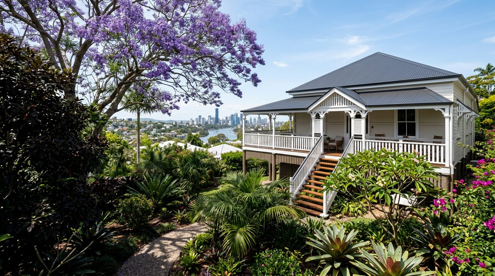
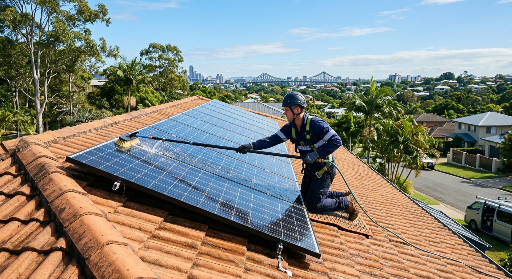
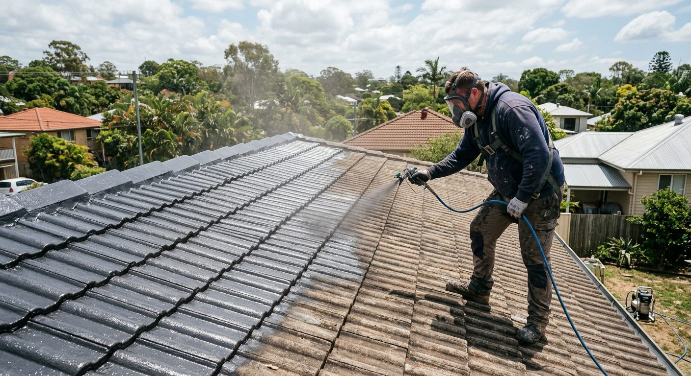

Clean
A pressure wash strips back dirt, moss and loose material so the coatings can bond.
QBCC-licensed · Moorooka, Brisbane
Clean, seal and three coats of paint. QBCC-licensed roof restoration across Brisbane, the Gold Coast and the Sunshine Coast.

What we do
Full restorations, paintwork, repairs, gutters and solar panel cleaning. Pick a service to see how the job is done.
Why homeowners choose us
Yondo runs every job himself. Reviewers keep mentioning the same things: clear pricing, real roofing knowledge and regular updates.
Meet the business →You know what the quote covers before the work begins.
Updates through the job, so you're never left guessing.
Licence 15637261, registered with Queensland's building regulator.
Work done efficiently, with the site left clean.
A considered sequence
"The process generally takes 3-5 days to complete." Each stage prepares the roof for the next.
A pressure wash strips back dirt, moss and loose material so the coatings can bond.
A sealer coat goes on the clean surface, ready for the paint system.
The finish is built in three coats of roof paint for an even, lasting colour.
4.9 ★ on Google
"Highly recommend this team for any roof restoration needs. The owner, Yondo, is great to deal with—transparent with pricing, incredibly knowledgeable, and keeps you updated throughout the whole process. The house looks brand new again."
"The roof not only looks brand new but also feels well-protected… They kept the site clean, worked efficiently, and delivered exactly what they promised — on time and without any hassle."
Service area
Based in Moorooka, covering Brisbane, the Gold Coast and the Sunshine Coast, plus Logan, Ipswich and the Redlands.
See suburbs we cover →Own an investment property in Queensland but live interstate?
We handle roof and gutter work without you on site.Services
From a full restoration to a single cracked tile, every job is quoted clearly and done by a QBCC-licensed team.
Not sure what you need?
Tell us what you're seeing: faded tiles, a leak, rusty gutters, grimy panels. We'll say which service fits.

The process
"The restoration process consist of a clean, seal and three coats of paint." Here's what happens at each stage.
We look over the roof, note any broken tiles, ridge capping or gutter issues, and give you a clear price for the whole job.
A high-pressure wash removes dirt, moss, lichen and loose material. A clean surface is what lets the coatings grip.
Any broken tiles are replaced and ridge capping re-pointed before coating, so the finish goes over a sound roof.
A sealer coat is applied to the clean roof, preparing the surface for the paint system.
The colour is built up in three coats for even coverage and protection from the Queensland sun and storms.
The site is left clean and you see the finished roof. Updates come through the whole job, so nothing is a surprise.

Representative imagery · not a verified company project
Timing depends on the roof's size and condition, and on the weather; coatings need dry days.
For property investors
For investment-property owners, including interstate landlords who can't be on site. Quoting, updates and approvals all happen by phone and WhatsApp.
"I am a NSW landlord that own a QLD investment property. I needed my gutter to be replaced as it was very rusty… It was meticulously done and well priced. I find Yondo trustworthy and his attention to detail was impeccable."
How it works remotely
Send the address and the issue by WhatsApp or phone. Tenant or agent details help us arrange access.
We look at the roof and gutters and tell you what we find.
A transparent price to approve in writing, with nothing hidden.
Progress updates through the job, and a heads-up when it's finished.
Common rental jobs
Rusty gutters, leaks and a tired roof all cost more the longer they wait. These jobs suit investment properties well.
About us
Brisbane Roof Restoration & Painting Services Pty Ltd is based in Moorooka and led by owner Yondo.
Our story
We're a newly registered Queensland company, and we'd rather be judged on our work than on a founding date. So far customers have given us 4.9 stars from 14 Google reviews, and 5.0 from 7 ratings on hipages, with 16 hires.
Yondo is on every job: pricing it, explaining it and keeping you updated. Customers describe him as "transparent with pricing, incredibly knowledgeable" and "trustworthy".
We restore and paint roofs, fix the details around them, and clean solar panels across Brisbane, the Gold Coast and the Sunshine Coast.
What we stand for
Clear quotes that say what's included.
Updates through the whole process.
Preparation done properly, finishes done neatly.
A clean site, efficient work, on time as promised.
Service areas
We cover Brisbane's north, south, east and west, the Gold Coast, the Sunshine Coast, Logan, Ipswich and the Redlands.
Brisbane
Beyond Brisbane
If you're in South East Queensland, ask. We'll tell you straight whether we can get to you.
Reviews
Plus 5.0 from 7 ratings on hipages, with 16 hires. Here's what customers say, word for word.
"Highly recommend this team for any roof restoration needs. The owner, Yondo, is great to deal with—transparent with pricing, incredibly knowledgeable, and keeps you updated throughout the whole process. The house looks brand new again."
"I am a NSW landlord that own a QLD investment property. I needed my gutter to be replaced as it was very rusty… It was meticulously done and well priced. I find Yondo trustworthy and his attention to detail was impeccable."
"The roof not only looks brand new but also feels well-protected… They kept the site clean, worked efficiently, and delivered exactly what they promised — on time and without any hassle."
FAQ
General guidance for Brisbane homeowners and landlords. Every roof is different, so we'll confirm the details when we quote.
The process generally takes 3 to 5 days. Roof size, repairs needed and the weather all affect it, since coatings need dry conditions.
A clean, a seal and three coats of paint. Repairs like broken tile replacement or ridge pointing are done before coating where the roof needs them.
Painting refreshes the colour and protection of a roof that's in sound shape. A restoration also takes in cleaning, repairs and sealing, for roofs showing wear. We'll tell you which your roof needs.
Common signs are faded or patchy colour, moss and lichen, cracked or slipped tiles, crumbling ridge bedding, water stains on ceilings and rusty gutters. After a big storm it's worth a check.
It depends on the roof's size, pitch, material and condition, so we quote each job after seeing it. Customers say our pricing is transparent: you'll know what's included before we start.
Usually not, as most work happens on the roof. We need access to the property and water. Interstate landlords can arrange everything by phone or WhatsApp.
Coatings shouldn't go onto a wet roof, so we pause on wet days and pick back up when it dries. That's one reason the timeframe is a range.
Dust, pollen and bird droppings build up on panels and can cut how much power they make. A careful clean, often alongside roof work, keeps them clear.
Yes. We hold QBCC licence 15637261. Our ABN is 48 699 747 398.
Brisbane, the Gold Coast and the Sunshine Coast, plus Logan, Ipswich and the Redlands. We're based in Moorooka.
Contact
Call, WhatsApp, or send the form: it opens WhatsApp with your details filled in, ready to send.
Thanks, WhatsApp should now be open.Press send there and Yondo will get back to you. If nothing opened, call 0456 496 222.
The fastest way to book an inspection.
Send photos of the roof and we'll take a look.
Monday to Saturday
6:30am – 6pm